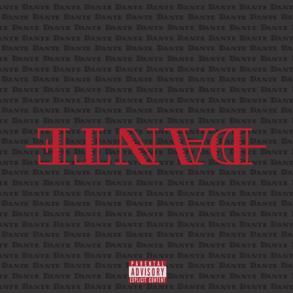
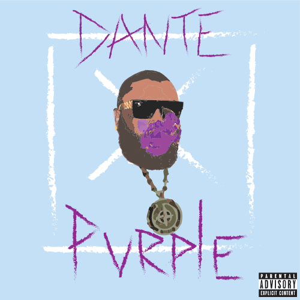
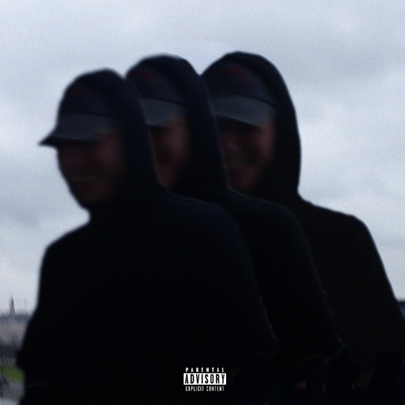
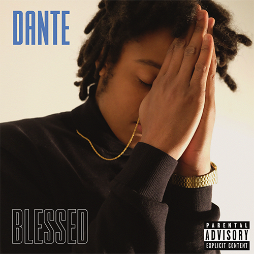

D A N T E
-
D A N T E
As Dante's debut album, it is a first introduction to this artist. The album speaks on Dante's daily struggles as well as the problems in the world. Dante is very prolific about political and social issues on his self-titled album. In short, a very edgy album where you find out who Dante really is and what his views on the world are.
-
P U R P L E
In Purple, Dante speaks on his ove-hate relationship with drugs. He talks about the beautiful and euphoric highs he's been through, but on the dreadful comedowns and depressions linked to his addiction.
-
F E A R
Fear is one of the struggles everyone has to live with daily. Dante lists his number of fears and how he treats them. How he battles his demons and tries to balance hatred and love. 'Fear' is Dante's most acclaimed album, because he truly opens up spiritually and emotionally to his listening audience.
-
B L E S S E D
In this album, Dante gives thanks to all the people and things that inspire him to make music. He realises how much the people around him gave an influance on his creativity and mentions this multiple times in the album. His faith in God is also very clear in 'Blessed'.